The Myth of the Wrap¶
John Yandell
"Show me the butt of the racquet!"
Visit almost any junior academy and you'll see dozens of eager younger players trying hard to whip the racquet head up and over the shoulder and point the butt of the racquet at the instructor.
It's a mantra in junior coaching. The exaggerated "wrap" follow-through is widely advocated as the magic key to "racquet head acceleration" in the modern topspin forehand.
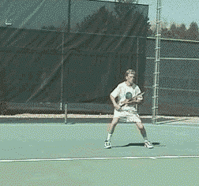
Many junior players appear to model their strokes after top players like Lleyton Hewitt with a big "wrap" finish. But how close are they really?
All the top players have big "wrap" finishes, right? So shouldn't other players copy them by trying to wrap the finish?
The answer is no. The belief that the "wrap" finish creates racquet head acceleration is a myth. In fact, the truth is probably exactly the opposite.
The wrap isn't the cause of a good forehand, it's an effect. By trying to wrap the finish, junior players are changing the fundamental shape of their swings in a way that has significant negative consequences.
Their forehands may appear similar to top pros. But video analysis shows some startling, critical differences.
Despite their "westernized" grips, players such as Gustavo Kuerten, Marat Safin, and Lleyton Hewitt all have remarkable extension through the contact zone.
By this I mean the racquet continues outward along the line of the shot, reaching a characteristic finish position before the start of the wrap. As the still photos below show, despite variations in grip, backswing, etc, all 3 players reach remarkably similar positions at this point of greatest extension. The wrap occurs only after they have reached this fully extended position.
The movement of the racquet along the line of the shot is the critical factor in racquet head acceleration and ball speed. In my opinion this finish position at the point of maximum forward extension should be considered the end of the technical swing pattern. Everything that happens thereafter (i.e., the wrap) should be considered a reaction or a consequence, and part of the recovery for the next shot.
Click on the photo of any player below to see a digital movie of the entire stroke.
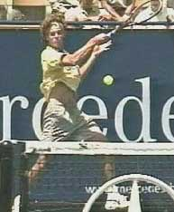
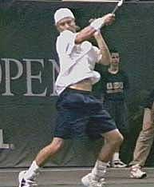
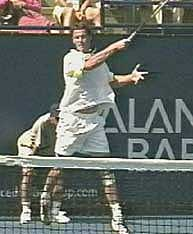
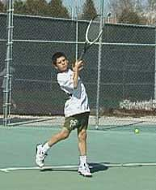
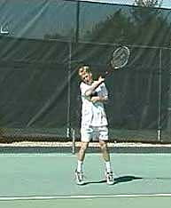
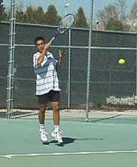
Compare the point of maximum extension of these top pro players to juniors with similar grip styles. The lack of extension in the juniors is the direct result of the mechanical wrap.
Let's compare the finishes of these 3 pro players to 3 junior players with similar grip styles. These are typical examples of the dozens of sectionally and nationally ranked players I have filmed who have what I call mechanical wraps. Click on the photos above and you will see exactly what I am talking about. Study the pro player and the junior with the corresponding grip style. Click through the video frame by frame and you will see the differences in the extension of the motion.
The juniors simply don't extend through the hitting zone in the same way. Their racquets come off the line of the shot much sooner. Note how much less extension all three players have compared to the pros with similar grip styles. Their strokes look almost collapsed as if the racquet had been forced backwards toward the body.
None reach the characteristic finish position of Guga, Hewitt, or Safin. This is the telltale indication of the forced, or mechanical wrap. Instead of hitting all the way through the ball, they pull rapidly off the shot, trying to force or muscle the racquet into the wrap position.
Their swing planes are shorter and steeper. Often they generate a lot of topspin, but they tend to lack depth and pace. Their balls just don't penetrate the court, despite what appears to be great effort in making the swing.
Of all the myths and misguided beliefs that I see in teaching and coaching, I have to say this is one of the most counterproductive. I can't stand to watch junior players with mechanical wraps for more than a few balls. Sometimes it actually makes me feel physically ill, because I see so many players laboring under the same delusion.
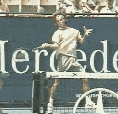
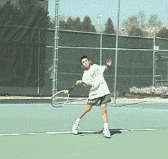
Compare the extension between Guga and this junior player with a similar grip.
This is why, when I do video clinics for elite juniors, I hear top coaches like Elliot Teltscher criticize the shape of the followthrough in one talented player after another.
In the physical world, for every action, there's an equal and opposite reaction, and in tennis, the reaction to a great, positive forward swing on the forehand is a relaxed, fluid wrap. It's not something players should try to make happen.
Research shows that the wrapping phase of the forehand has nothing to do with racquet head acceleration. Advanced Tennis measurements show that during the wrap, the racquet is not accelerating. Actually, it's the opposite.
During the wrap, the racquet head is decelerating, and decelerating radically. At the completion of the wrap, the racquet head speed drops to the lowest point in the entire stroke-about 10% of the maximum racquet head speed or less. During the wrap the racquet is moving more slowly than at the start of the backswing!
It makes sense when you think about it. How could the wrap actually be part of a positive forward swing when the racquet is moving backwards?
Why would a player purposefully try to swing the racquet in the opposite direction that he was trying to hit the ball? With the great players, the energy is directed into the forward swing and the wrap just happens.
If you know to look for it, you can learn to see these differences with the naked eye. Players with a natural wrap seem smooth, and the motion has a natural looking shape and extension. Players with an artificial wrap look mechanical and cramped.
You can almost see these players picking the racquet up and forcing it to what they believe is the correct "wrapped" finish position. But there is a big difference between trying to wrap and letting the wrap happen.
So the mantra of junior tennis, "show me the butt of the racquet," is well-intentioned, but misguided. Ironically, the traditional emphasis on hitting through the ball, and extending the follow-through forward and upward is probably still the key to developing the so-called modern forehand. It's just that with the "westernized" grips the shape of swing and the hitting arm positions look a little different, and the check points need to be adjusted accordingly.
This was the principle change Robert Lansdorp made when Russian phenom Maria Sharapova first came to him several years ago. Click here and you can see how Lansdorp trained her to hit through her forehand, when she was just 13, although he didn't try to change her semi-western grip. It may be the single most important reason she is one of the rising stars on the women's tour.
You can also see this relationship between extension, racquet head acceleration, and the wrap quite clearly in the Stroke Archives when you click through the forehands of the top players frame by frame.
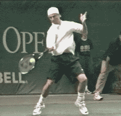
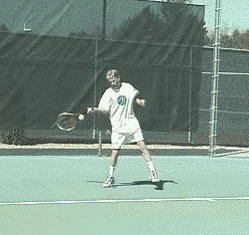
The whole strokes may look the same, but compare the critical path of the racquet through the contact zone.
Just watch how far the racquet head really travels with every click. You'll see that during the wrap the racquet head travels the least distance compared with other parts of the swing, especially compared to the movement just before and after the hit.
The pros don't wrap the racquet to generate racquet head speed. They wrap the racquet because they have racquet head speed. Good players wrap the finish because they have to, to decelerate the racquet and get ready for the next shot.
The irony is the wrap is not some new development that appeared recently in the high speed modern game. It's an inevitable part of a high level forehand, regardless of grip structure.
The wrap has been a part of high level tennis since the beginning, as the amazing animation of Big Bill Tilden's classic forehand (below) makes clear. Watch him hit through the line of the shot, then wrap the racquet over his shoulder, just like the so-called "modern" forehand.
And Tilden wasn't an exception. It was the same for all the great champions who followed. Don Budge, Jack Kramer, Pancho Gonzales, Rod Laver-they all wrapped. If you don't believe me, just check out Ed Atkinson's classic Kings of the Court video. (Click here.)
So how did this myth become so prevalent?
With the move to more extreme forehand grips and the increased internal arm rotation in the swing patterns, the wraps naturally became more extreme as well. Since the racquet is moving slower at the wrap than at any part of the swing, this exaggerated motion is also much easier to observe than what is actually happening around the contact.
The problem is compounded by the fact that most coaches didn't learn to hit their own strokes with the extreme grips their students are now using, and there is no established teaching methodology to help players learn the new patterns.
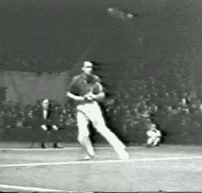
The wrap has been around as long as tennis as Big Bill's classic eastern forehand shows.
Virtually all the teaching systems, along with the tennis tips passed down over the generations from coaches to players, are based on classic grips.
So coaches looked at the new forehands, trying to figure them out. The easiest thing to identify was the more extreme wrapping motion, so they concluded that this was the revolutionary "new" technical element in the modern forehand.
Unfortunately, the only thing that was really new was the idea of making the wrap a conscious, mechanical movement. By trying to force the wrap finish, junior players learned to reduce rather than increase their ability to accelerate the racquet through the hit. This is something the video clips make only too clear.
Here is an important qualification: I'm not necessarily arguing that the more extreme western grips that players like Hewitt and Guga use are the way to go for juniors, much less for the average club player. In fact, I still think Pete Sampras has the best grip and the best technical pattern to model, especially for lower level players.
Agassi looks almost classical by modern standards, and I can't see why anyone would want a more extreme grip than his "mild" semi-western. But that's just my opinion.
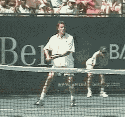
The extreme wrap is obvious in the modern forehand, but not the technical key to developing it.
What I am saying is that we need a teaching methodology for the extreme grips because they are here to stay, no matter what I or what any other coach might think. And teaching the wrap is definitely the wrong approach.
What we need instead is a way to bring the swing patterns of our junior players more closely in line with the world's top players who have the same grip styles.
So if the wrap is a consequence rather than a cause of a good swing what should coaches teach instead? And how does the wrap relate to the rest of the technical swing pattern?
Let's look in more detail at Kuerten, Safin, and Hewitt. As different as these players' forehands may appear, when we study them in high speed video, there are three important commonalities when it comes to the extension and finish.
First, all three players extend the swing along the line of the shot for a distance of up to 2 or 3 feet after the contact.
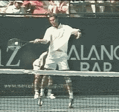
Marat Safin demonstrates the characteristic extension and finish of a top modern forehand.
Second, during this extension of the swing, the wrist position remains laid back, and literally unchanged (See the Myth of the Wrist). The wrist begins to release only as the player moves toward the end of the extension. As the wrist releases, the racquet begins to slow down. But as it decelerates, the racquet still continues to move upwards and outwards toward the target.
The third commonality is that as the racquet continues on this path upward and outward it reaches a characteristic finish or follow-through position.
This is the furthermost point before the racquet actually starts to move backwards. It signifies the technical end of the forward swing pattern and the start of the wrap.
The player's hand typically reaches about eye level. The hand is also well forward, about two feet in front of the plane of the body and roughly in line with the left shoulder.
The player's forearm is at about a 45 degree angle to the plane of the court with the elbow bent. The upper arm is parallel to the court.
Only after passing through this position do good players begin to wrap the finish. As we have noted, the wrap signals the final deceleration phase of the swing, and the beginning of the recovery for the next shot.
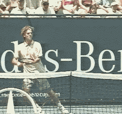
The challenge in teaching the modern forehand is distinguishing between cause and effect when it comes to the contact, the extension, and the wrap.
Let's be clear: the problem here is not something for which the players and coaches should be blamed. The problem lies in the difficulty of observing and analyzing the game itself, and particularly the evolution in technique.
The motions simply happen too quickly for the human eye to register clearly. Research needs to uncover what the successful players are really doing, and teaching needs to help players produce the same result.
One of the biggest challenges remains separating out what is a cause from what is an effect in the various stroke patterns, especially the new forehands.
The fact that a particular movement is happening over the course of the stroke (i.e., the wrap) doesn't necessarily mean that players should try to make that movement happen - even if it appears to be quite prominent and distinctive, as in the case with the modern forehand.
That's why we need more high speed video, more quantitative analysis, and especially more discussion and give and take between coaches and players in determining what is positive, constructive information in teaching the modern game.
John Yandell is widely acknowledged as one of the leading videographers and students of the modern game of professional tennis. His high speed filming for Advanced Tennis and Tennisplayer have provided new visual resources that have changed the way the game is studied and understood by both players and coaches. He has done personal video analysis for hundreds of high level competitive players, including Justine Henin-Hardenne, Taylor Dent and John McEnroe, among others.
In addition to his role as Editor of Tennisplayer he is the author of the critically acclaimed book Visual Tennis. The John Yandell Tennis School is located in San Francisco, California.